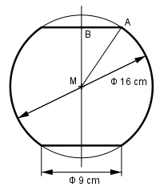

Aufgabe 388 Eine Kugelvase hat einen Innendurchmessser von 16 cm. Boden und Öffnung sind gleich groß und haben einen Durchmesser von 9 cm. Wie groß ist das Volumen V der Vase?

rKugel = d/2 = 16 cm/2 = 8 cm Satz von Pythagoras im Dreieck MAB: MA = 8 cm = rKugel MB = h AB = 9 cm/2 = 4,5 cm MA2 = MB2 + AB2 |-AB2 MB2 = MA2 - AB2 = = 82 cm2 - 4,52 cm2 = 43,75 cm2 |√ MB = 6,61 cm hKappe = 8 cm - 6,61 cm = 1,39 cm л VKappe = --- * hKappe2 * (3 * rKugel - hKappe) 3 л VKappe = --- * 1,392 * (3 * 8 - 1,39) cm3 = 3 = 45,7 cm3 V = VKugel - 2 * VKappe dKugel3 * л V = ------------- - 2 * 45,7 cm3 = 6 = 2 143,6 cm3 - 91,4 cm3 V = 2 052 cm3